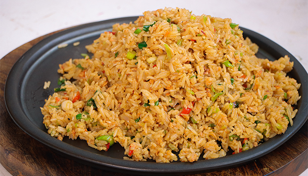
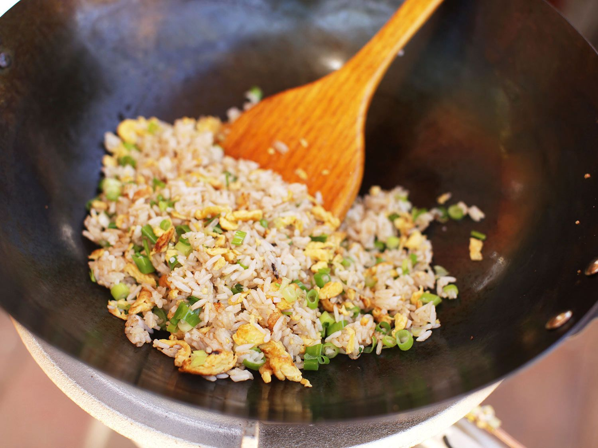

Egg Fried Rice

Description
Egg Fried Rice is a staple in asian cuisine in general with a few variations here and there.
In this recipe I will show you how I do it at home.
Ingredients
- Jasmine rice /Long grain rice variety
- Chicken stock (Home made if possible)
- 1 shallot
- 3 garlic cloves
- 1 fresh red chilli
- Sambal(or alternative chilli paste)
- 4 spring onions
- 4 eggs
- Sesame oil
- Soy sauce
- Pepper
- MSG
- Vegetable oil

Steps
- Egg fried rice is prepared using day-old rice so prepare yours in a rice cooker or in a pot then leave to cool in the fridge. This will reduce the starch content and make it much drier.
Tip: Before cooking the rice, put your desired amount into a large bowl and wash it thoroughly with water. Move the rice around using your hand to make sure it has all been coated really well. The water should turn white. Strain well and move on to cook.
- To cook the rice, add the required amount of chicken stock where you would normally add water, the amount will depend on how much you make/how many people you are serving.
- If using a rice cooker, cover the rice with chicken stock then put the lid on and turn to cook. Once ready, transfer to a container and seal tightly before leaving it in the fridge.
- Dice the whole shallot then finely slice the garlic and chop the chilli.
- Next, remove the end part of the spring onion and finely chop these up too.
- Crack two eggs into a mixing bowl then another two egg yolks along with them(these add so much flavour and texture to your egg fried rice).
- Whisk the eggs well then add 2 teaspoons of sambal paste (or more if you want a bigger chilli kick) and whisk this through too.
- Get a large wok and put it on the stove at a medium heat and add a generous drizzle of vegetable oil. Lift the wok every so often and turn it using your wrist so that the oil starts to cost the sides too.
- Once the wok starts to release a gentle smoke, it is ready to create your egg fried rice!
- Pour the oil into a separate bowl before adding fresh oil (approx. 2 tablespoons) to the wok along with the shallots and garlic.
- Let these sauté for no more than 2 minutes and make sure you stir and mix them around so they don’t burn and cook well.
- Next, add the egg to the wok and quickly mix this through, breaking it up using a stainless steel spatula, you have to be fast or else it will scramble and burn!
- Once it is cooked but still moist, add the rice (6 handfuls or your desired amount), fresh chilli, shallots and mix/toss through really well.
- Sprinkle some black pepper on top of the rice before adding soy sauce, sesame oil and mix well.
- Add 2 heaped tablespoons of MSG and mix through once again.
- Once everything has combined really well turn the stove off and serve!
How To Serve
Scoop up as much egg fried rice as you like and enjoy as a side or main dish.